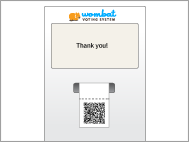
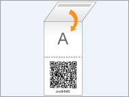
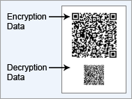
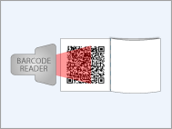
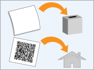
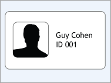

הבוחר/ת נכנס/ת לקלפי ומזדהה באמצעות תעודת זהות. ועדת הקלפי בודקת שהבוחר/ת מופיע/ה ברשימת הבוחרים ולא הצביע/ה עדיין. הוועדה מורה לבוחר/ת להיכנס לתא ההצבעה.
2. הכנת הפתק

הבוחר/ת נכנס/ת לתא ההצבעה ובוחר/ת באמצעות מסך מגע. מכונת ההצבעה מדפיסה פתק בעל שני חלקים ניתקים: האחד מכיל את ההצבעה בטקסט גלוי והשני מכיל את ההצבעה מוצפנת.
3. ביקורת הפתק (אופציונלי)
בשלב זה הבוחר/ת יכול/ה לבחור בין ביקורת הפתק לבין שימוש בו להצבעה.
א) אם הבוחר/ת בוחר/ת להמשיך,

הבוחר/ת לוקח/ת את הפתק, מקפל/ת אותו על הטקסט הגלוי, יוצא/ת מתא ההצבעה וממשיך/ה לשלב 4.
ב) אם הבוחר/ת בוחר/ת לבצע ביקורת, מכונת ההצבעה חושפת כיצד הפתק נוצר. קיים אלגוריתם פשוט (המשתמש בנתונים הנוספים שמכונת ההצבעה סיפקה לבקשת הביקורת) הבודק שהטקסט הגלוי וההצפנה האלקטרונית שעל הפתק תואמים. ניתן להריץ את האלגוריתם בעודך בקלפי, או בכל זמן מאוחר יותר. כל מי שיש לו רקע בסיסי בהצפנה יכול לכתוב את אלגוריתם הבדיקה. למשל, אפליקציית אנדרואיד זו מבצעת בדיקה זו.

אלגוריתם הבדיקה יכול לעבור או להיכשל:
אם הטקסט הגלוי אינו תואם את טקסט הצופן שעל הפתק שהודפס בשלב 2, חוסר ההתאמה נחשף ומכונת ההצבעה נפסלת.
אחרת, הפתק עקבי. הבוחר/ת חוזר/ת לשלב 2 כדי להצביע עם פתק אחר (כיוון שפתק שעבר ביקורת אינו יכול לשמש להצבעה).
4. הצבעה

הבוחר/ת מוסר/ת את הפתק המקופל לוועדת הקלפי. הוועדה חותמת את הפתק וטקסט הצופן נסרק ומפורסם בדף מעקב ההצבעות הציבורי.

הבוחר/ת קורע/ת את הפתק לשניים מול חברי ועדת הקלפי. הטקסט הגלוי המכוסה מוכנס לתיבת הקלפי, וטקסט הצופן ניתן לבוחר/ת כקבלה. הבוחר/ת יכול/ה להשתמש בקבלה כדי לוודא שההצבעה המוצפנת אכן הועלתה לדף מעקב ההצבעות הציבורי.


כיצד להצביע
1. זיהוי

הבוחר/ת נכנס/ת לקלפי ומזדהה באמצעות תעודת זהות. ועדת הקלפי בודקת שהבוחר/ת מופיע/ה ברשימת הבוחרים ולא הצביע/ה עדיין. הוועדה מורה לבוחר/ת להיכנס לתא ההצבעה.
2. הכנת הפתק

הבוחר/ת נכנס/ת לתא ההצבעה ובוחר/ת באמצעות מסך מגע. מכונת ההצבעה מדפיסה פתק בעל שני חלקים ניתקים: האחד מכיל את ההצבעה בטקסט גלוי והשני מכיל את ההצבעה מוצפנת.
3. ביקורת הפתק (אופציונלי)
בשלב זה הבוחר/ת יכול/ה לבחור בין ביקורת הפתק לבין שימוש בו להצבעה.
א) אם הבוחר/ת בוחר/ת להמשיך,

הבוחר/ת לוקח/ת את הפתק, מקפל/ת אותו על הטקסט הגלוי, יוצא/ת מתא ההצבעה וממשיך/ה לשלב 4.
ב) אם הבוחר/ת בוחר/ת לבצע ביקורת, מכונת ההצבעה חושפת כיצד הפתק נוצר. קיים אלגוריתם פשוט (המשתמש בנתונים הנוספים שמכונת ההצבעה סיפקה לבקשת הביקורת) הבודק שהטקסט הגלוי וההצפנה האלקטרונית שעל הפתק תואמים. ניתן להריץ את האלגוריתם בעודך בקלפי, או בכל זמן מאוחר יותר. כל מי שיש לו רקע בסיסי בהצפנה יכול לכתוב את אלגוריתם הבדיקה. למשל, אפליקציית אנדרואיד זו מבצעת בדיקה זו.

אלגוריתם הבדיקה יכול לעבור או להיכשל:
4. הצבעה

הבוחר/ת מוסר/ת את הפתק המקופל לוועדת הקלפי. הוועדה חותמת את הפתק וטקסט הצופן נסרק ומפורסם בדף מעקב ההצבעות הציבורי.

הבוחר/ת קורע/ת את הפתק לשניים מול חברי ועדת הקלפי. הטקסט הגלוי המכוסה מוכנס לתיבת הקלפי, וטקסט הצופן ניתן לבוחר/ת כקבלה. הבוחר/ת יכול/ה להשתמש בקבלה כדי לוודא שההצבעה המוצפנת אכן הועלתה לדף מעקב ההצבעות הציבורי.